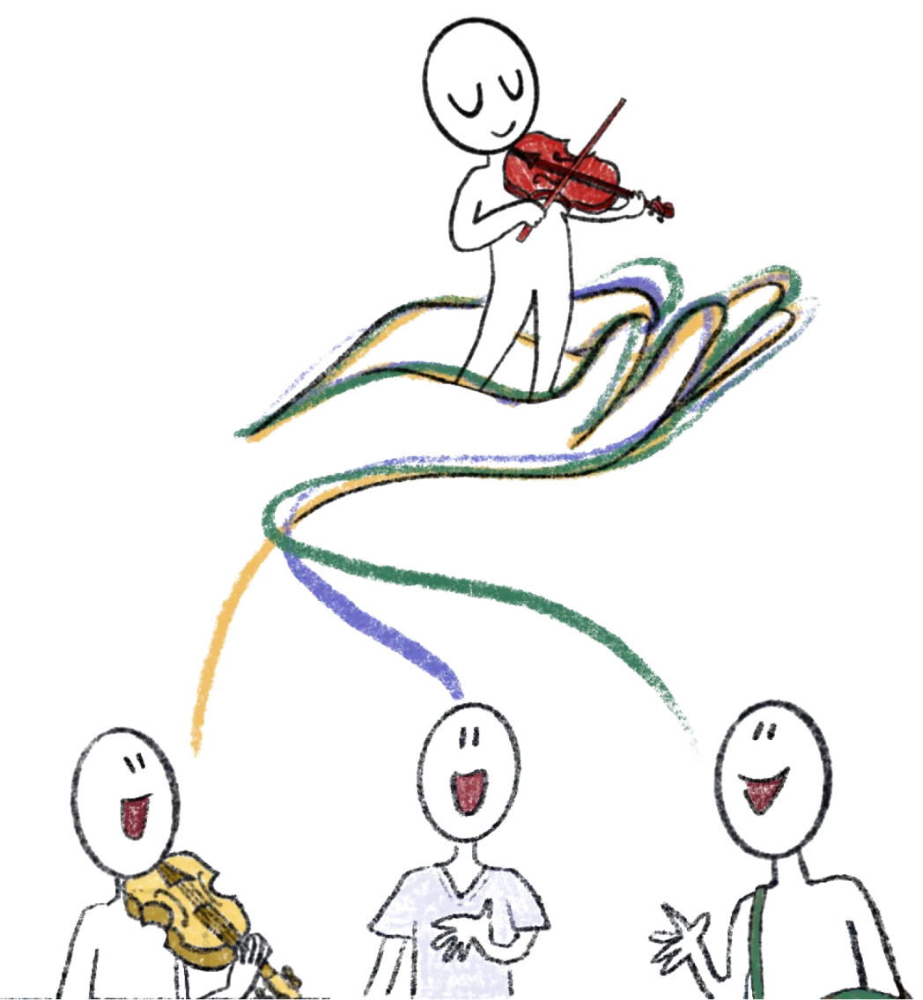
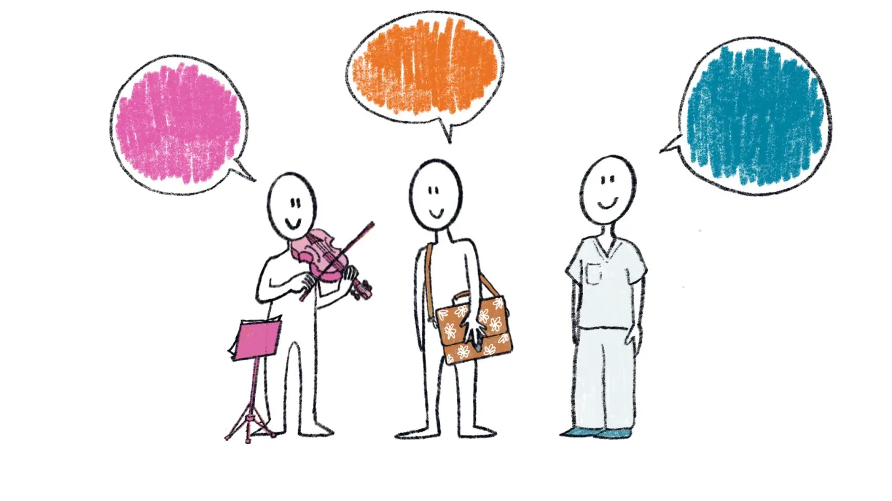
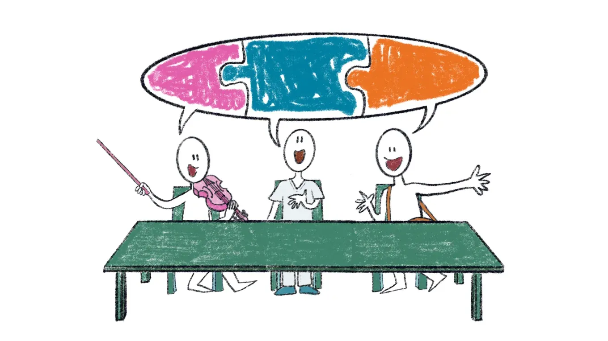
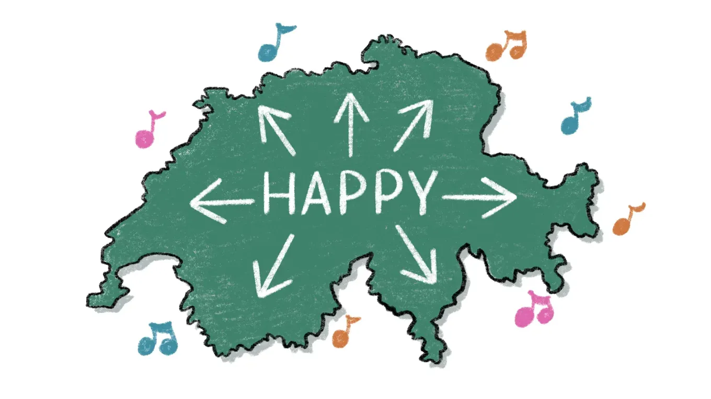
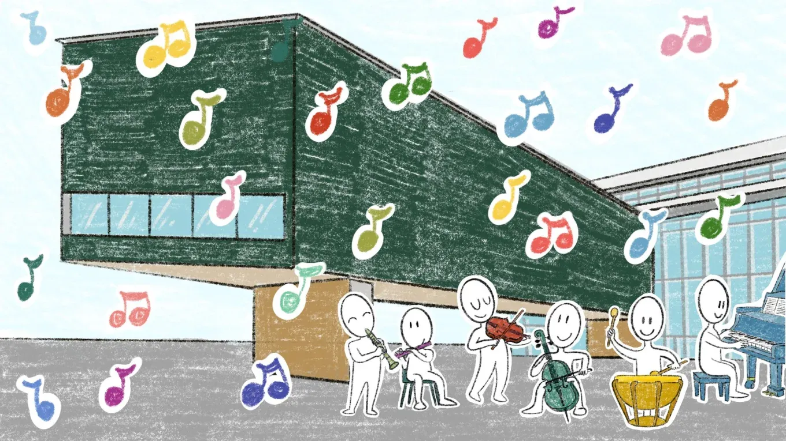
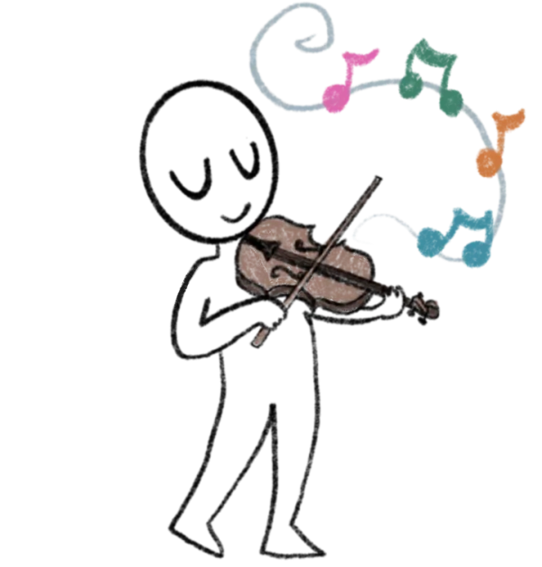

Happy
HeAlthy Playing Practices for Young musicians

Crediti del video
Illustrazione e montaggio: Laura Bassi (Fisiocamera (si apre in una nuova scheda))
Testo e voce: Cinzia Cruder
Musica: Buddy – Bensound (si apre in una nuova scheda). Support by RFM - NCM (si apre in una nuova scheda)
Cos'è Happy?
HAPPY è un progetto della Scuola universitaria professionale della Svizzera italiana (SUPSI), che riunisce insegnanti di musica, famiglie e professionisti della salute per promuovere la salute dei giovani musicisti. Il progetto è finanziato dal programma Agora del Fondo nazionale svizzero (FNS) e trasforma la ricerca sulla salute dei musicisti in strumenti pratici e accessibili, per costruire fin dall'infanzia abitudini di pratica sane e consapevoli.
Partecipa al progetto (si apre in una nuova scheda)Perché Happy?

Suonare uno strumento richiede posture e movimenti particolari, che bambini e ragazzi imparano poco alla volta. Prestare attenzione a questi aspetti fin dai primi anni può aiutare a prevenire tensioni e problemi legati alla pratica strumentale.
Per questo HAPPY coinvolge insegnanti, famiglie e professionisti della salute. Le loro esperienze e competenze aiutano a capire di cosa hanno bisogno i giovani musicisti. Insieme, sviluppiamo strumenti per prevenire problemi e promuovere la salute.
Vuoi partecipare?
Insegni musica? Tuo figlio o tua figlia suona uno strumento? Ti occupi della salute di bambini o adolescenti? Scopri il progetto e come puoi collaborare con noi.
Come partecipare
Parti dal sondaggio e raccontaci la tua esperienza!
Partecipa al progetto (si apre in una nuova scheda)A chi ci rivolgiamo
Scopri le risorse pensate per te e come puoi collaborare con noi.
Le Fasi del progetto
-

Fase 1 - Comprensione del contesto
HAPPY parte dall’ascolto. Sondaggi, primi workshop e il lancio degli HAPPY Diaries permettono di esplorare il contesto, raccogliere esperienze e mettere a fuoco i bisogni di bambini, insegnanti e famiglie, gettando le basi per gli strumenti da sviluppare.
-

Fase 2 - Co-design del Toolkit
I contributi raccolti alimentano lo sviluppo dell’HAPPY Toolkit. Attraverso workshop di co-design con insegnanti, famiglie e professionisti della salute prendono forma strumenti di valutazione, guide illustrate, infografiche e protocolli.
-

Fase 3 - HAPPY Health Weeks
Il Toolkit viene sperimentato sul campo. Durante le HAPPY Health Weeks, organizzate nelle scuole di musica svizzere, insegnanti e famiglie utilizzano i materiali e forniscono un riscontro che guida la revisione finale, testando gli strumenti su scala nazionale.
-

Fase 4 - Giornata della salute dei musicisti
Il progetto si conclude con la Giornata della salute dei musicisti al LAC di Lugano, un evento pubblico con presentazione dei risultati, esibizioni e confronto. Seguono le misure di continuità, dalla piattaforma open-access alla rete di ambassador, fino alle proposte per l’adozione a livello nazionale.
La Ricerca
La ricerca sulla salute dei musicisti è una parte importante di HAPPY: ci aiuta a capire quali aspetti approfondire, a sviluppare gli strumenti del progetto e a valutarne l'efficacia. Di seguito trovi i principali studi che fanno da riferimento al progetto, organizzati per tema.
Una parte importante della ricerca alla base di HAPPY nasce dal progetto RISMUS (Risk of Music Students), finanziato dal Fondo nazionale svizzero (FNS), che ha studiato i disturbi legati alla pratica strumentale negli studenti universitari di musica in Europa.
Riferimenti
- Cruder, C., Koufaki, P., Barbero, M., & Gleeson, N. (2019). A longitudinal investigation of the factors associated with increased risk of playing-related musculoskeletal disorders in music students (RISMUS): a study protocol. (si apre in una nuova scheda) BMC Musculoskeletal Disorders, 20(1), 64.
- Cruder, C., Barbero, M., Koufaki, P., Soldini, E., & Gleeson, N. (2020). Prevalence and associated factors of playing-related musculoskeletal disorders among music students in Europe. (si apre in una nuova scheda) PLoS One, 15(12), e0242660.
- Cruder, C., Barbero, M., Soldini, E., & Gleeson, N. (2021). Patterns of pain location in music students: a cluster analysis. (si apre in una nuova scheda) BMC Musculoskeletal Disorders, 22(1), 184.
- Cruder, C., Soldini, E., Gleeson, N., & Barbero, M. (2023). Factors associated with increased risk of playing-related disorders among classical music students within the RISMUS longitudinal study. (si apre in una nuova scheda) Scientific Reports, 13(1), 22939.
I disturbi muscolo-scheletrici legati alla pratica strumentale (playing-related musculoskeletal disorders, PRMDs) possono comparire già nei primi anni di studio. La ricerca ha rilevato questi disturbi anche tra bambini e adolescenti. Gli studi condotti in Australia hanno riportato una prevalenza fino al 69% tra i giovani musicisti. In Svizzera, invece, mancano ancora dati specifici su questa fascia d’età. È proprio questa una delle lacune che HAPPY vuole contribuire a colmare.
Riferimenti
- Gembris, H., Menze, J., Heye, A., & Bullerjahn, C. (2020). High-Performing Young Musicians’ Playing-Related Pain. (si apre in una nuova scheda) Frontiers in Psychology, 11, 564736.
- Ranelli, S., Smith, A., & Straker, L. (2011). Playing-related musculoskeletal problems in child instrumentalists: the influence of gender, age, and instrument exposure. (si apre in una nuova scheda) International Journal of Music Education, 29, 28-44.
- Ranelli, S., Straker, L., & Smith, A. (2008). Prevalence of playing-related musculoskeletal symptoms and disorders in children learning instrumental music. (si apre in una nuova scheda) Medical Problems of Performing Artists, 23, 178-185.
- Ranelli, S., Straker, L., & Smith, A. (2014). Soreness during non-music activities is associated with playing-related musculoskeletal problems. (si apre in una nuova scheda) Australian Journal of Physiotherapy, 60(2), 102-108.
- Vinci, S., Smith, A., & Ranelli, S. (2015). Selected Physical Characteristics and Playing-Related Musculoskeletal Problems in Adolescent String Instrumentalists. (si apre in una nuova scheda) Medical Problems of Performing Artists, 30(3), 143-151.
Gli insegnanti hanno un ruolo importante nella salute dei giovani musicisti. La ricerca mostra che una formazione specifica può aiutarli a portare nella pratica didattica maggiore attenzione alla salute e al benessere degli allievi.
Riferimenti
- Hildebrandt, H., & Nubling, M. (2004). Providing further training in musicophysiology to instrumental teachers. (si apre in una nuova scheda) Medical Problems of Performing Artists, 19(2), 62-69.
- Evans, A., Rennie-Salonen, B., Wijsman, S., & Ackermann, B. (2024). A scoping review of occupational health education programs for music students and teachers. (si apre in una nuova scheda) Research Studies in Music Education, 46(3), 493-515.
- Rickert, D. L. L., Barrett, M. S., & Ackermann, B. J. (2015). Are music students fit to play? (si apre in una nuova scheda) International Journal of Music Education, 1-16.
- Wijsman, S., & Ackermann, B. J. (2019). Educating Australian musicians: are we playing it safe? (si apre in una nuova scheda) Health Promotion International, 34(4), 869-876.
- Wijsman, S., & Ackermann, B. (2025). Instrumental and vocal music teachers’ health knowledge and health promotion strategies. PAMA Annual Symposium, Washington DC.
I genitori sono spesso i primi a osservare sintomi di disagio fisico nei figli, ma raramente dispongono di strumenti adeguati per riconoscerli o affrontarli. La ricerca indica che informare le famiglie contribuisce alla prevenzione precoce.
Riferimenti
- Ackermann, B. J., & Driscoll, T. R. (2013). Attitudes and practices of parents of teenage musicians to health issues related to playing an instrument. (si apre in una nuova scheda) Medical Problems of Performing Artists, 28(1), 24-27.
- Gembris, H., & Davidson, J. (2002). Environmental influences. (si apre in una nuova scheda) In R. Parncutt & G. E. McPherson (Eds.), The Science and Psychology of Music Performance. Oxford University Press.
- McKechnie, N. C., & Jacobs, K. (2011). Physical and environmental factors contributing to music related injuries among children. (si apre in una nuova scheda) Work, 40(3), 303-315.
- Ranelli, S., Smith, A., & Straker, L. (2015). The association of music experience, pattern of practice and performance anxiety with playing-related musculoskeletal problems in children. (si apre in una nuova scheda) International Journal of Music Education, 33, 390-412.
Prendersi cura della salute di un giovane musicista richiede di conoscere anche le caratteristiche della pratica strumentale. HAPPY vuole favorire questo incontro tra il mondo della salute e quello della musica, creando occasioni di confronto e condivisione tra professionisti.
Riferimenti
- Ackermann, B. J. (2018). Making health care worth it: increasing value and awareness in performing arts medicine. (si apre in una nuova scheda) Medical Problems of Performing Artists, 33(2), 146.
- Stanhope, J. (2020). Should musicians play in pain? (si apre in una nuova scheda) British Journal of Pain.
- Stanhope, J., Pisaniello, D., & Weinstein, P. (2022). The effect of strategies to prevent and manage musicians’ musculoskeletal symptoms: A systematic review. (si apre in una nuova scheda) Archives of Environmental and Occupational Health, 77(3), 185-208.
Il Team
Gruppo di progetto
-
Cinzia Cruder (si apre in una nuova scheda)
Ricercatrice
SUPSI DEASS, SUM-CSI -
Antonio Amendola (si apre in una nuova scheda)
Responsabile della comunicazione
SUPSI DEASS -
Massimo Zicari (si apre in una nuova scheda)
Musicologo e professore di ricerca
SUM-CSI -
Serena Cangiano (si apre in una nuova scheda)
Ricercatrice senior
SUPSI DACD, IDe -
Ginevra Terenghi (si apre in una nuova scheda)
Ricercatrice
SUPSI DACD, IDe -
Nerea Asensio Tornero (si apre in una nuova scheda)
Interaction designer
SUPSI DACD, IDe -
Laura Bassi (si apre in una nuova scheda)
Fisioterapista e illustratrice
Fisiocamera -
Paolo Paolantonio (si apre in una nuova scheda)
Docente ricercatore
SUM-CSI -
Luciano Zampar (si apre in una nuova scheda)
Docente di musica e percussionista
-
Bronwen Ackermann (si apre in una nuova scheda)
Professoressa di ricerca in fisioterapia
University of Sydney -
Christine Guptill (si apre in una nuova scheda)
Professoressa di terapia occupazionale
University of Ottawa -
Marco Barbero (si apre in una nuova scheda)
Fisioterapista e professore di ricerca
2rLab, SUPSI DEASS
- Area Ricerca e sviluppo della Scuola universitaria di Musica del Conservatorio della Svizzera italiana (SUM-CSI)
- LACedu
- PhysioTicino
- Ergotherapie-Verband Schweiz – sezione Ticino, Associazione svizzera di ergoterapia
- Swissmedmusica, Società svizzera di medicina della musica
- Scuola di Musica del Conservatorio della Svizzera italiana
- Scuola di Musica Moderna (SMuM)
- Scuola Moderna di Musica (HMI)
- Centro Artistico MAT
- Associazione Musicando (SMM)
- Accademia Vivaldi
- Scuola Popolare di Musica (SPML)
- Scuola di Musica Biaschese
